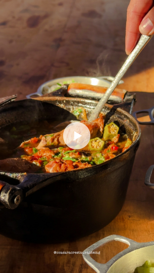
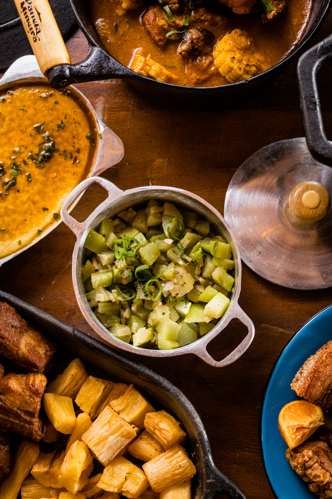
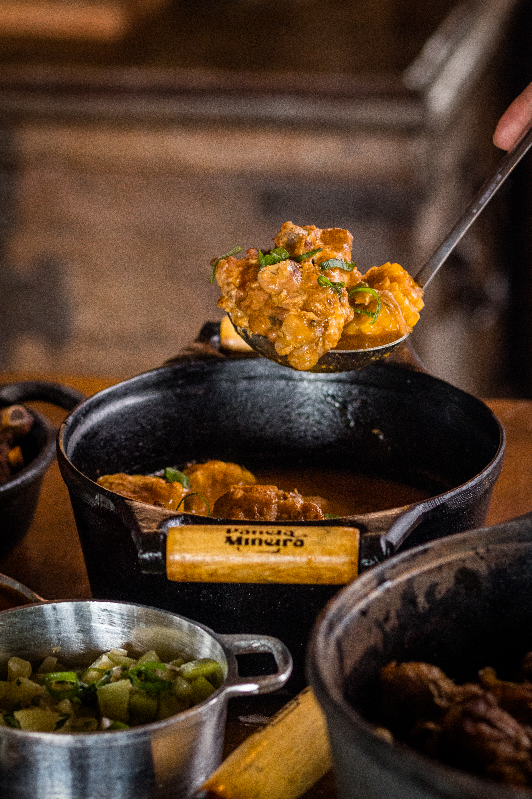
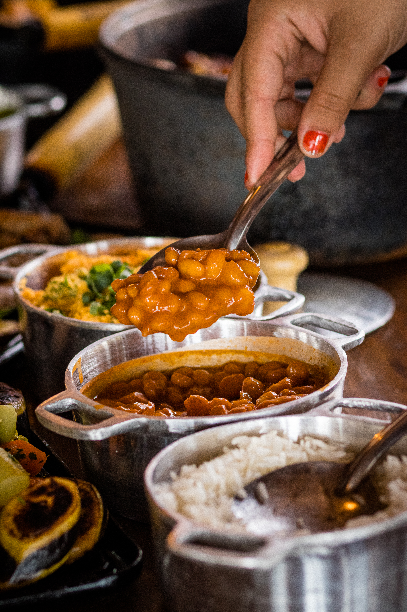
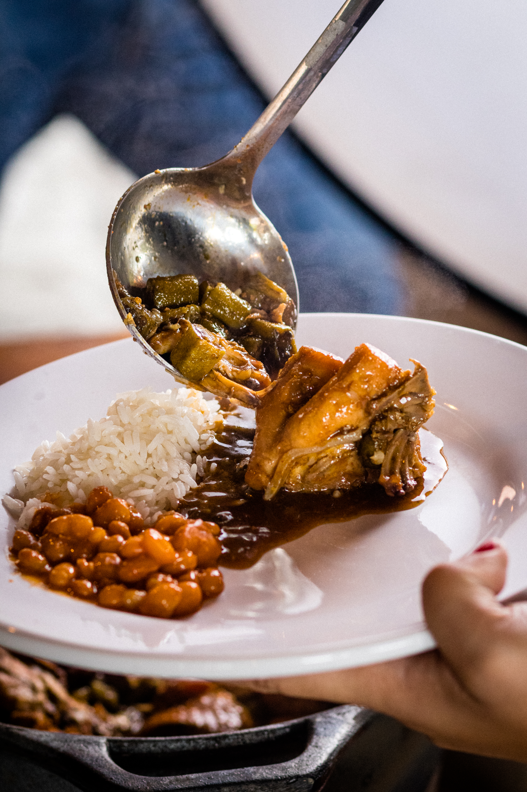
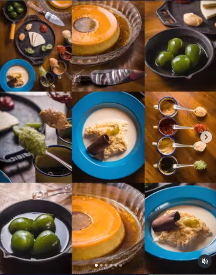
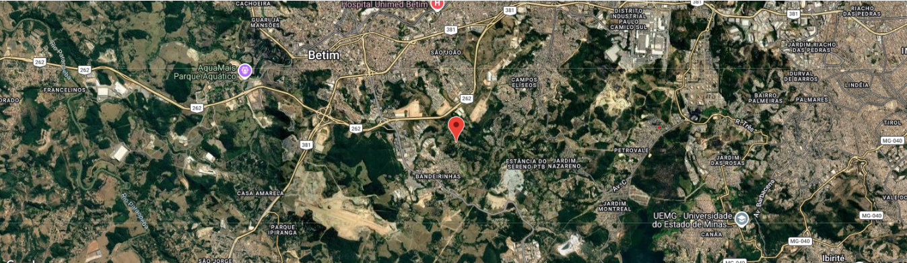
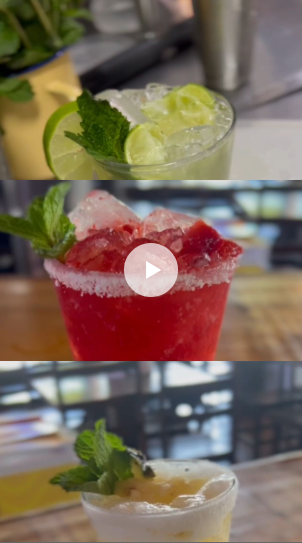

Tradicional Restaurante de Comida Mineira em Betim, Minas Gerais.


O "Sítio Casarão" como era conhecido, foi construído pelo Sr. Luiz Dias e a Sra. Cláudia Dias já há algum tempo, um sonho que ao longo de muitos anos se tornou realidade.
Agora o local está aberto ao público como "O Casarão Restaurante". Localizado na cidade de Betim, Minas Gerais, é um lugar pra cumê bem e viver uma experiência da época da vovó, é cada coisa boa que você num vai aguentá.
Você tem que vim aqui vê os trem sô... Temos museu com antiguidades e carros antigos sempre passam por aqui também.
A cozinha é comandada por um povo bão dimais da conta, a chef é a Lidiane Martins e seu esposo Alexandre Morais, que fazem um tanto de coisa boa também por aqui.
Não é um lugar somente para cumê, é pra saborear, prosear, relaxar e ter uma verdadeira experiência com a gastronomia mineira raiz, e, antes de ir embora, tomar aquele cafezinho adoçado com rapadura, levantar da mesa e dizer: “que trem bão sô!”
Nossas reservas são feitas por WhatsApp.








Atendimento por ordem de chegada e com reservas pelo nosso WhatsApp abaixo.
(31) 98258-0519
Funcionamento
SEXTA - 11h às 16h (Feijoada Casarão)
SÁBADO - 11h às 16h
DOMINGO - 11h às 16h
FERIADOS - 11h às 16h





Rua, Alameda dos Coqueiros, 7 - Bandeirinhas, Betim - MG, 32657-600